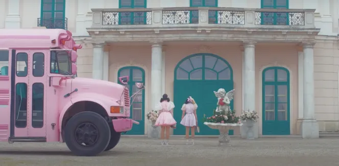
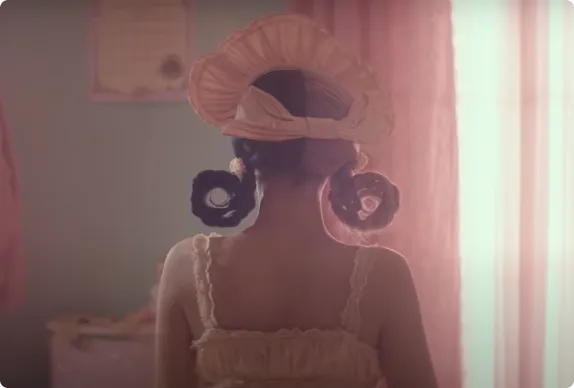
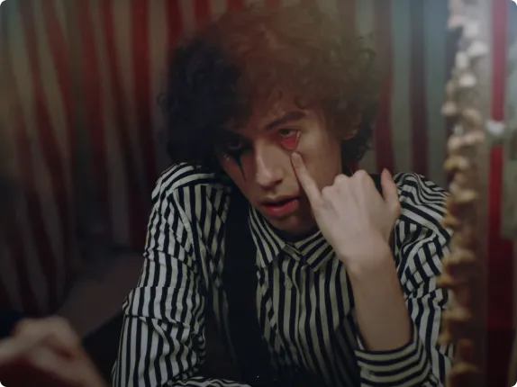
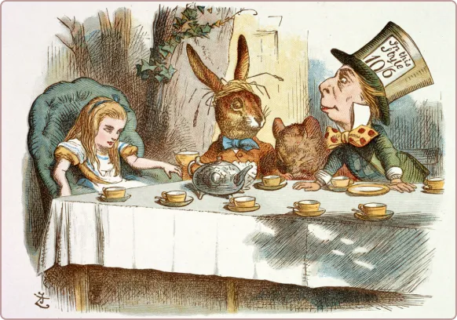
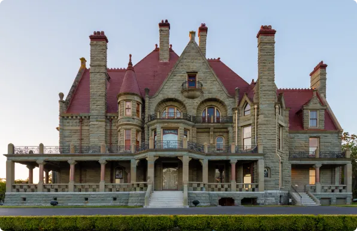
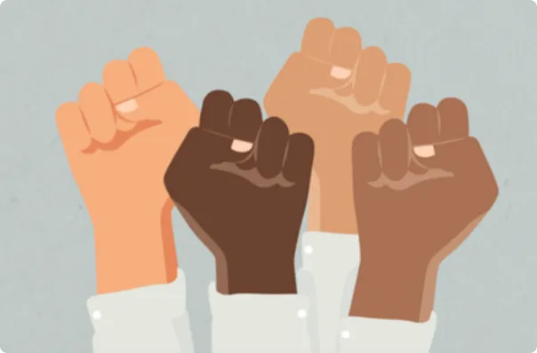
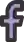

<!DOCTYPE html>
<html lang="en"x-data="{menuIsOpen: false}" :class="{noscroll:menuIsOpen,}"></html>
<head>
    <meta charset="UTF-8">
    <meta http-equiv="X-UA-Compatible" content="IE=edge">
    <meta name="viewport" content="width=device-width, initial-scale=1.0">
    <title>Kairos</title>
    <script defer src="https://unpkg.com/alpinejs"></script>
    <style>
      .menu{
        position: fixed;
        top: 0;
        left: 0;
        width: 100vw;
        height: 100vh;
        background-color: #fff;
        display: grid;
        place-content: center;
      }
      .header__menuBtn{
        position: relative;
        z-index: 10;
      }
      .noscroll,
      .noscroll body {
        overflow: hidden;
       }
    </style>
</head>

<body>
 <header>
  <a href="/">
    
    </a>
<h1>Kairos</h1>
  <nav>
    <button aria-controls="mainNav" @click="menuIsOpen = ! menuIsOpen" class="header__menuBtn">
      <ul><li><a href="#"></ul></button> 
    <nav id="mainNav" x-show="menuIsOpen" x-transition.duration.800ms
    class="menu"
    >
<h1>CONTENU</h1>
  <ul>
        <li><a href="#"><h1>K-12 un film à ne pas manquer</h1></a></li>
        <li><a href="#"><h1>Alice et le pays des merveilles</h1></a></li>
        <li><a href="#"><h1>Freak une musique surprenante</h1></a></li>
        <li><a href="#"><h1>Le château de Craigdarroch</h1></a></li>
        <li><a href="#"><h1>la monté des discriminations</h1></a></li>
        <li><a href="#"><h1>Une lueur d'espoir</h1></a></li>
    </ul>
  <ul>
    <h1>EN SAVOIR PLUS</h1>
        <li><a href="A PROPOS.html">A PROPOS</a></li>
        <li><a href="NOUS CONTACTER.html">NOUS CONTACTER</a></li>
        <li><a href="AUTRES PROJETS">AUTRES PROJET</a></li>
  </ul>
 </nav>
</header>
 
<main>
  <p>Bienvenue cher lecteur, ici nous sommes sur Kairos un site qui peut être qualifié de capsule temporelle virtuelle.</p>
  
  <p>laisse ton intuition te guider
</p>

   <section>
    <h2>à découvrir</h2>
    
    <article>
      <a href="#">
        </a>
        <p>extrait du film k-12</p>
        <h2><a href="k-12.html">Plongez dans le monde fantastique de K-12,</h2></a>
    </article>

    <article>
      <a href="#">
        </a>
        <p>extrait de la musique freak de sub urban</p>
        <h2><a href="freak.html">Découvrez la troupe de cirque de Sub urban</h2></a>
      </article>

    <article>
      <a href="#">
        </a>
        <p>illustration du roman de Lewis Caroll</p>
        <h2><a href="alice.html">Une balade dans le monde des merveilles, ça vous dit?</h2></a>
    </article>

    <article>
      <a href="#">
        </a>
        <p>photographie du château</p>
        <h2><a href="château.html">une petite visite d'un Château emblématique</h2></a>
    </article>

   <article>
    <a href="#">
        </a>
        <p>image illustrant les discriminations</p>
        <h2><a href="discrimination.html">Un point sur l’injustice et la discrimination</h2></a>  
   </article>

    <article>
    <a href="#">
        </a>
        <p>image illustrant l'espoir pour la société</p>
        <h2><a href="espoir.html">Une lueur d’espoir pour la société</h2></a>  
    </article>

    <footer>
      <h3>Nous suivre</h3>
      <ul>
        <a href="instagram">
          
        </a>
        <a href="facebook>">
          
        </a>
        <a href="Twitter">
          
        </a>
      </ul>
      <nav>
        <a href="à propos.html">Section à propos
        </a>
        <a href="Contact.html">Section Contact
        </a>
        <a href="Glossaire.html">Section Glossaire
        </a>
        <a href="Autres projets.html">Section Autres projets
        </a>
      </nav>
      <div>
        <h3>Mentions légales</h3>
        <p>Projet réalisé dans le cadre d’un exercice 
          pédagogique au département <a href="https://mmi-montbeliard.nathanvanbignootvincler.fr/"> MMi de Montbéliard.</a></p>
        <p>Fait par Marwa Nezzar MMI 1 groupe B2</p>
      </div>
    </footer>
      